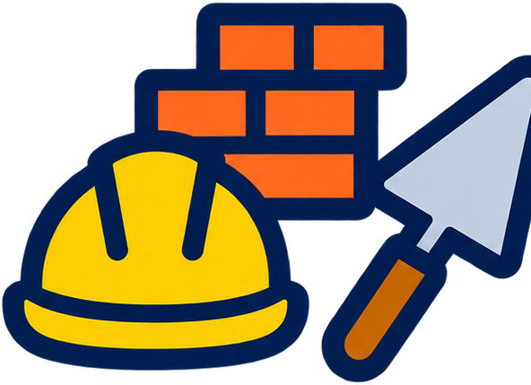

🎓
Formación técnica de calidad
Educación secundaria técnica con base científica y práctica real de taller.
Escuela de Educación Secundaria Técnica de gestión pública, en La Plata, que combina la formación secundaria con especialidades técnicas orientadas a la práctica en taller y al mundo del trabajo.
La E.E.S.T. N.º 5 "Gral. Manuel N. Savio" es una escuela secundaria técnica de gestión estatal de La Plata. Además de los contenidos comunes del secundario, forma técnicos en especialidades orientadas al trabajo, combinando teoría con práctica de taller y laboratorio.
Forma parte de la comunidad educativa de la ciudad desde hace varias décadas, acompañando a generaciones de estudiantes en su formación técnica y su inserción en el mundo laboral o en estudios superiores.
Apertura de la institución como escuela técnica de gestión pública en La Plata.
Incorporación de nuevas especialidades técnicas y ampliación de talleres y laboratorios.
Formación técnica activa en Construcción, Electromecánica, Química e Informática.
Educación secundaria técnica con base científica y práctica real de taller.
Vínculo activo con las familias y la comunidad de La Plata.
Escuela pública, abierta a toda la comunidad, sin costo de matrícula.
Formación orientada a salidas laborales concretas y a estudios superiores.

Formación en técnicas de construcción y albañilería, con práctica en taller.
Instalaciones eléctricas, electrotecnia aplicada y mantenimiento de máquinas y mecanismos.
Prácticas de laboratorio y procesos químicos con base científica.
Formación en programación, sistemas informáticos y tecnologías digitales, con práctica en proyectos y laboratorio.
Conocé el proceso de pre-inscripción y sumate a la E.E.S.T. N.º 5.